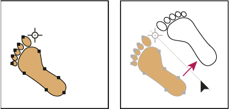
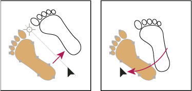

Reflect objects
Reflecting an object flips the object across an invisible axis that you specify. You can reflect objects using the Free Transform tool, the Reflect tool, or the Reflect command.
 To create a
mirror image of an object, you can copy while reflecting.
To create a
mirror image of an object, you can copy while reflecting. Reflect an object with the Free Transform tool
Reflect an object with the Free Transform tool
- Select the object to reflect.
- Select the Free Transform tool.
- Do one of the following:
-
Drag a handle of the bounding box past the opposite edge or handle until the object is at the desired level of reflection.
-
To maintain the object’s proportions, hold down Shift while dragging a corner handle past the opposite handle.
-
Reflect an object with the Reflect tool
- Select the object.
- Select the Reflect tool .
- To draw the invisible axis across which you want the object to reflect, click anywhere in the document window to set one point of the axis. The pointer changes to an arrowhead.
- Position the pointer at another point to define the invisible
axis, and do one of the following:
-
Click to set the second point of the invisible axis. When you click, the selected object flips over the defined axis.

Click to set one point of the axis (left), then click again to set the other axis point and reflect the object across the axis (right).
-
To reflect a copy of the object, hold down Alt (Windows) or Option (Mac OS) and click to set the second point of the invisible axis.
-
Adjust the axis of reflection by dragging instead of clicking. Shift‑drag to constrain the angle by 45°. As you drag, the invisible axis of reflection rotates around the point you clicked in step 3 and an outline of the object appears reflected. When the outline is in the desired position, release the mouse button.

Dragging the second point of the reflect axis to rotate the axis
-
For finer control, drag farther from the object’s reference point.
Reflect by specifying an axis
-
Select
the object to reflect.
-
To reflect the object around the object’s center point, choose Object > Transform > Reflect or double-click the Reflect tool.
-
To reflect the object around a different reference point, Alt‑click (Windows) or Option‑click (Mac OS) anywhere in the document window.
-
- In the Reflect dialog box, select the axis across which you want the object to be reflected. You can reflect an object across a horizontal, a vertical, or an angled axis.
- If the object contains patterns and you want to reflect the patterns, select Patterns. (To reflect only the patterns, deselect Objects.)
- To preview the effect before you apply it, select Preview.
- Do one of the following:
-
To reflect the object, click OK.
-
To reflect a copy of the object, click Copy.
-